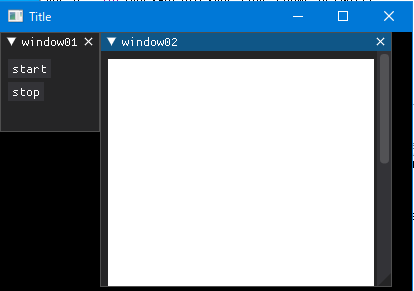
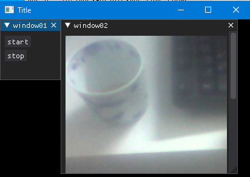

2nd January 2023 at 9:31pm
Dear PyGuiを使って、WEBカメラによる撮像画像（OpenCVのVideoCaptureクラスを利用）を表示するアプリケーションを作ってみます。
アプリケーションの動作としては、以下の通りです。
- アプリケーション起動時にWEBカメラの撮像画像サイズを取得します。
- 上記サイズで「動的テクスチャー（Dynamic Texture）」を作成します。
- [start]ボタンで連続撮像を開始し、画像を「動的テクスチャー」に登録します。
- [stop]ボタンで連続撮像を中止します。
動的テクスチャー（Dynamic Texture）
テクスチャーには以下の3タイプがあります。今回は動的テクスチャーを利用します。
- Static（静的）
- 頻繁に変更されない画像に使用されます。
- 一度読み込んだテクスチャーを変更することはできません。
- Dynamic（動的）
- 変化する可能性のあるテクスチャに使用されます。
- テクスチャーを変更することが可能です。ただし、サイズを変更することはできません。
- Raw（生データ）
- 動的テクスチャと同じように利用します。
- 主な違いは「テクスチャーにできるのは配列のみ」、「安全チェックは行われない」。
サイズ変更はできませんので、起動時に作成します。
サンプルスクリプト
以下は、サンプルクリプト11です。
# サンプルスクリプト11
import os
import threading
import numpy as np
import cv2
import dearpygui.dearpygui as dpg
# UVCカメラは0で起動します。適当な番号にしてください。
# この時点でテクスチャーのサイズが決まります。
CAP = cv2.VideoCapture(0)
ret, frame = CAP.read()
CAP_W = int(CAP.get(cv2.CAP_PROP_FRAME_WIDTH))
CAP_H = int(CAP.get(cv2.CAP_PROP_FRAME_HEIGHT))
print(f"Width = {CAP_W}")
print(f"Height = {CAP_H}")
# 初期は[stop]の状態
isContinuousGrab = False
# 撮像した画像
frame = None
# テクスチャー「dynamic_texture」に画像を登録します
def set_image_to_dynamic_texture(image):
image = cv2.cvtColor(image, cv2.COLOR_BGR2RGBA)
dpg.set_value("dynamic_texture", image/255)
# 連続撮像を行い、テクスチャー「dynamic_texture」に画像を登録します
def grab_and_set_image():
global frame
while isContinuousGrab:
ret, frame = CAP.read()
set_image_to_dynamic_texture(frame)
# [start]ボタンを押した時のコールバック
def button_start(sender, app_data, user_data):
global isContinuousGrab
if isContinuousGrab is not True:
isContinuousGrab = True
thread = threading.Thread(target=grab_and_set_image)
thread.start()
# [stop]ボタンを押した時のコールバック
def button_stop(sender, app_data, user_data):
global isContinuousGrab
if isContinuousGrab is not False:
isContinuousGrab = False
# 以下、DearPyGuiの基本構成
dpg.create_context()
dpg.create_viewport(title='Title', width=300, height=300)
# テクスチャーレジストリの作成
with dpg.texture_registry():
img_white = np.ones((CAP_W, CAP_H, 4), np.uint8)
dpg.add_dynamic_texture(CAP_W, CAP_H, img_white, tag="dynamic_texture")
# window01の作成（ボタンの作成）
with dpg.window(label="window01") as parent_window01:
dpg.add_button(label="start", callback=button_start)
dpg.add_button(label="stop", callback=button_stop)
# window02の作成（画像の表示）
with dpg.window(label="window02", pos=(100,0)) as parent_window02:
dpg.add_image("dynamic_texture", tag ="dynamic_image")
dpg.setup_dearpygui()
dpg.show_viewport()
dpg.start_dearpygui()
dpg.destroy_context()実行すると、

[start]ボタンを押すと、連続撮像を開始します。[stop]ボタンを押すと、中止します。

サンプル11を簡単に説明します。
まず、CAP = cv2.VideoCapture(0)以降で、起動時にWEBカメラの起動と撮像画像サイズの取得を行います。「ID=0」としていますので、適当に変更してください。
連続撮像用のフラグ「isContinuousGrab」は初期はFalseにしています。
次に、「関数」や「コールバック関数」の設定をしています。
def set_image_to_dynamic_texture(image)- ・テクスチャーに画像をセットする関数です。
- ・セットできる形式は、floatのRGBA形式です。
- ・テクスチャーを生成しなおす必要はありません。静的テクスチャーの時よりもコードが簡素です。
def grab_and_set_image()- ・ 連続撮像し、撮像した画像を引数に「set_image_to_dynamic_texture」を実行します。
- ・isContinuousGrabがTrueの時のみループします。
- ・今後のことを考えて、最後に撮像した画像はグローバル変数にしておきます。
button_start(sender, app_data, user_data)- ・[start]ボタンを押した時のコールバックです。
- ・フリーズしないようにスレッドで実行しています。
button_stop(sender, app_data, user_data)- ・[stop]ボタンを押した時のコールバックです。
- ・isContinuousGrabをFalseにするだけです。
最後に、dpg.create_context()以降は、今まで繰り返してきたDearPyGuiのアイテムの作成や表示などの基本的な流れです。あまり難しい部分はないかと思います。
with dpg.texture_registry()でテクスチャーを、WEBカメラの撮像画像サイズで作成しています。初期は、真っ白画像（すべて1）です。
これだけのコードで、「カメラからの画像の取得」～「ボタンのコールバック」～「画像の表示」までできてしまうのは、なかなかではないでしょうか。